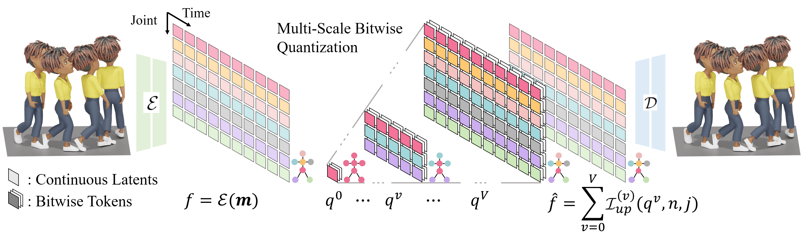

MoScale: Autoregressive Next-Scale Prediction for Human Motion Generation
1. Text-to-Motion Generation
1.1. Motion Generation via Next-Scale Token Map Prediction
Given a prompt $c$, we autoregressively predict the next-scale token maps $\{q^v\}_{v=0}^{V}$ conditioned on all coarser-scale token maps. Note that the 2D skeletal-temporal token maps are flattened into 1D for ease of visualization.
1.2. Motion Generation Gallery
"A person is bowing politely."
The person aligns both feet together and straightens posture before bending smoothly forward from the hips. Hands remain at the sides while the back remains straight. After a short pause, they rise again with controlled motion, reestablishing upright balance and respectful demeanor.
"A person is mimicking a slow zombie walk."
The person shuffles forward with slow, stiff movements typical of a zombie walk. Feet drag lightly, knees slightly bent, and arms reach out with elbows locked and fingers splayed. The torso leans forward with a slight wobble, and the head tilts awkwardly to one side, emphasizing an eerie, unnatural gait.
"A person is running joyfully."
The person accelerates into a light run, taking buoyant strides with arms swinging actively. The torso leans slightly forward, head lifted, and each step shows relaxed rhythm. Occasionally they hop or extend their stride playfully, giving the sense of freedom and delight through dynamic, flowing motion.
"A person walks and turns right."
The person begins in a relaxed standing position. They start walking forward, smoothly turning their head to the right. As they continue moving, they gently change direction by turning their entire boy to the right, maintaining a steady pace.
1.3. Comparisons to Previous Works
The person adopts a defensive stance, arms up guarding the head. They rapidly lean back and duck to the side as if dodging punches. Their knees bend for agility, feet shuffle quickly to maintain position. After each dodge, they reset their stance, staying alert and ready for another incoming strike.
The person strums an invisible guitar with vigorous hand movements. Their right hand mimics fast strumming motions while the left hand presses imaginary strings on the fretboard. They lean forward slightly, shifting weight between feet with a rhythmic bounce, expressing excitement and musical engagement.
The person sits or stands and mimics rowing a boat, grasping an imaginary oar with both hands. They perform slow, controlled strokes, pulling back with their arms while leaning torso backward, then pushing forward while leaning torso slightly forward. Legs and feet shift subtly to stabilize each stroke in a rhythmic, flowing motion.
The person bends forward with one knee slightly bent and one foot in front . Both hands move quickly and precisely near the shoe area, looping and pulling imaginary laces in alternating patterns. The torso shifts slightly for balance, then the person straightens up smoothly and adjusts stance before relaxing arms by their sides.
2 Zero-Shot Text-Driven Motion Editing
2.1. Motion Editing Overview
Starting from the source prompt $c_s$, we autoregressively generate the source tokens $\{q_s^v\}_{v=0}^{V}$. With additional target prompt $c_t$ with a source-token preservation mask $\{\mathcal{M}^v\}_{v=0}^{V}$, we predict edited tokens $q'^{(v)}_t$ conditioned on the remaining source motion context and $c_t$. The target token maps $\{q_t^v\}_{v=0}^{V}$ are generated by blending the source tokens $q_s^v$ with the predicted tokens $q'^{(v)}_t$.
2.2 Motion Editing Gallery
The person walks forward at a relaxed pace with an upright posture. Their arms swing naturally at their sides in opposition to the legs. The steps are even and steady, with a smooth heel-to-toe motion. The head faces forward, and the torso remains stable throughout the walk.
The person walks forward at a relaxed pace with an upright posture. Their arms lift upward away from the sides, raising the hands to about shoulder height or higher. The steps are even and steady, with a smooth heel-to-toe motion. The head faces forward, and the torso remains stable throughout the walk.
The person walks forward at a steady pace with arms swinging naturally at the sides. Both legs move evenly with a smooth heel-to-toe motion, and the torso remains upright and stable throughout.
The person walks forward at a steady pace with arms swinging naturally at the sides. The right leg moves with a heavy limp, landing with less weight and a shortened stride, while the left leg carries more of the body's load. The torso sways gently to the left with each step to compensate.
The person walks forward steadily in a relaxed pace, pauses in the middle, stands still briefly, then resumes walking forward at the same steady pace.
he person walks forward steadily in a relaxed pace, then bends the knees and lowers into a squat position midway, rises back upright, and resumes walking forward at the same steady pace.
The person stands in a fighting stance and throws a quick jab forward with the left fist, fully extending the left arm, then immediately follows with a straight cross punch with the right fist, extending the right arm forward with more power. Both fists then retract back to guard position.
The person stands in a fighting stance and throws a quick jab forward with the right fist, fully extending the right arm, then immediately follows with a straight cross punch with the left fist, extending the left arm forward with more power. Both fists then retract back to guard position.
3. Multi-Scale Skeletal-Temporal Token Map

Given an input motion sequence $\mathbf{m}$, the encoder $\mathcal{E}$ maps it to a continuous skeletal-temporal latent grid $f$. The latent is decomposed into a hierarchy of residual components $\{q^v\}_{v=0}^V$ via binary multi-scale residual quantization, where each scale has its own temporal resolution and skeletal partition. The quantized residuals are then upsampled and accumulated to form the reconstructed latent $\hat{f}$, which the decoder $\mathcal{D}$ converts back into a full-resolution motion sequence.
| $\sum_{v=0}^{\mathbf{2}}\mathcal{I}_{up}^{(v)} \left(
q^v,n,j
\right)$ (Scale 3 / 11) |
$\sum_{v=0}^{\mathbf{5}}\mathcal{I}_{up}^{(v)} \left(
q^v,n,j
\right)$ (Scale 6 / 11) |
$\sum_{v=0}^{\mathbf{8}}\mathcal{I}_{up}^{(v)} \left(
q^v,n,j
\right)$ (Scale 9 / 11) |
$\sum_{v=0}^{\mathbf{10}}\mathcal{I}_{up}^{(v)} \left(
q^v,n,j
\right)$ (Full Scale) |
To understand our learned multi-scale motion representation, we visualize the
step-by-step reconstruction of motions by progressively accumulating tokens across the skeletal-temporal
hierarchy.
In the earlier, coarse-level tokens, the motions of paired limbs—such as both arms or both legs—are
naturally grouped and embedded into shared, symmetric joint representations.
As we process rightward towards finer scales, the token maps recursively split according to our
predefined skeletal hierarchy.
Consequently, the coarse, symmetric movements gradually disentangle into independent, highly articulated
motions for individual left and right limbs, progressively restoring the full realism and fine-grained
details of the original motion (the rightmost character).